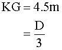

COPYRIGHT Tim Lovett © 2003
In this study, the vertical centre of mass (centroid) is derived from WWF study "Cargo Estimate for Noah's Ark". Calculations follow the ideas of a previous paper (Hong et al (1)) with some modifications, and a more detailed payload is tabulated.
As it turns out, the weight of cargo is far too low to obtain a draft similar to previous studies (15 cubits). Space (interior volume) is the driving factor since most of the contents are relatively lightweight.
The centre of gravity turned out to be higher than earlier studies, so roll stability would be reduced. The comfort of its occupants would improve however - the longer roll period providing more gentle accelerations. This is an important factor for the housing of live animals.
1. Centre of Gravity according to Hong et al 1994
2. Centre of gravity based on Woodmorappe's Data
The principal study regarding the performance of Noah's Ark "Safety Investigation of Noah’s Ark in a Seaway" was first published in Creation Ex Nihilo Technical Journal 8(1):26–35, 1994; by S.W. Hong, S.S. Na, B.S. Hyun, S.Y. Hong, D.S. Gong, K.J. Kang, S.H. Suh, K.H. Lee, and Y.G. Je. Ref(1).This paper revealed the dimensions of the ark were astonishingly well chosen. The conclusions of the paper are summarized Safety Investigation for Dummies.
An 18 inch cubit was used, and a 15 cubit draft (as proposed by Collins, Morris), giving a displacement of 21 016 tonnes. Structural studies required 4000 tonnes of wood for the hull, leaving 17 016 tonnes for cargo.
Hong et al (1) dealt with the Center of Gravity, briefly deriving a KG value (vertical distance from keel to centre of gravity) of D/3. All subsequent calculations assumed this value - the mass centered one third up from the keel.

The calculation of KG is straightforward, so it was left out of the paper. However, the derivation is given in detail below.
Hong et al (1) took each floor as equally dividing the 13.5m height, and the hull centroid (center of mass) conservatively at half the depth (13.5 / 2), the centroid is calculated in detail below. It appears the cargo centroid was located at the floor level itself, rather than some distance above the floor - which is more realistic.
|
A |
B |
C = B |
D=17016 / 3 |
E = C x D |
|
Floor |
Floor level |
Mass Centroid |
Cargo Case#1 |
Mass Arm |
|
# |
m above keel |
m above keel |
tonnes |
tonne . m |
|
1 |
0 |
0 |
5672 |
0 |
|
2 |
4.5 |
4.5 |
5672 |
25524 |
|
3 |
9 |
9 |
5672 |
51048 |
|
Hull |
NA |
6.75 |
4000 |
27000 |
|
Total |
NA |
NA |
21016 |
103572 |
Table 1a: KG1 for 1:1:1 floor loading |
||||
So the vertical centre of gravity KG1 = 103572 / 21016 = 4.928m. This agrees with Hong et al (1) KG1 =4.93m.
|
A |
B |
C = B |
D=17016 / 3 |
E = C x D |
|
Floor |
Floor level |
Mass Centroid |
Cargo Case#1 |
Mass Arm |
|
# |
m above keel |
m above keel |
tonnes |
tonne . m |
|
1 |
0 |
0 |
6806.4 |
0 |
|
2 |
4.5 |
4.5 |
6806.4 |
30628.8 |
|
3 |
9 |
9 |
3403.2 |
30628.8 |
|
Hull |
NA |
6.75 |
4000 |
27000 |
|
Total |
NA |
NA |
21016 |
88257.6 |
Table 1b: KG2 for 2:2:1 floor loading for decks 1,2 & 3. |
||||
The vertical centre of gravity KG2 = 88257.6 / 21016 = 4.1995m, which is also close to Hong et al (1) KG2 = 4.21m.
The two results for KG were then averaged, resulting in an effective deck loading in the ratio 11:11:8, or 6239, 6239 and 4538 tonnes.
The way this calculation was done assumes the cargo was like a layer of lead ingots on the floor of each deck. The centroid (mass centre) of the cargo on each floor is taken at the level of the floor, which is not a good approximation. The centre of mass is likely to be some metres higher, depending on how the cargo is stacked. This depends on the density of the payload.
In 1996, investigation of Noah's Ark was enhanced with the comprehensive "NOAH'S ARK: A Feasibility Study"; John Woodmorappe, ICR 1996. This provided an opportunity to assess the loading more closely, with approximations given for major components of the cargo inventory.
Based on generous food and water requirements for the animals, Woodmorappe (2) derived 11,000 tonnes of cargo. (Table 8 p48).
For more detailed analysis based on Woodmorappe's data see the WWF study "Cargo Estimate for Noah's Ark" which concluded with the following.
|
Cargo |
Mass Tonnes |
Centroid Yc |
Mass Arm m3 |
Comments on Centroid Derivation |
|
Hull |
5 333 |
6.0 | 31998 |
Located just below vertical centre due to heavy keel and lighter roof. |
|
Water |
2 000 |
7.5 | 15000 |
4.5m is average deck elevation + 3m hanging skins |
|
Dry food (grain) |
2 400 |
6.5 | 15600 |
4.5m + 2m stack |
|
Dry food (hay) |
600 |
6.5 | 3900 |
4.5m + 2m stack |
|
Enclosures |
4 000 |
5.8 | 23200 |
4.5m + 1.3m |
|
Ramps |
200 |
6.75 | 1350 | centred |
|
Passages |
200 |
6.75 | 1350 | centred |
|
Animals |
400 |
5.5 |
2200 | 4.5m + 1m |
|
TOTAL |
15133 |
NA |
94598 | KG3 = 94598 / 15133 = 6.25m |
|
Table 4a: KG3 for Distributed Loading |
||||
The vertical centre of gravity KG3 = 94598 / 15133 = 6.25m. (Compare to Hong et al (1)'s KG2 = 4.5m.)
This will reduce roll stability, increasing the roll period significantly. The ride will be more comfortable than "13 times more stable than the standard of safety required by the ABS rule" (Hong et al (1)). However, this will be offset somewhat by the reduction in displacement.
The draft is d = 15133*1000 / (1020 x 137.16 x 22.86) = 4.75m (Compare to Hong et al (1)'s d = 6.75.)
"Safety Investigation of Noah’s Ark in a Seaway" first published in Creation Ex Nihilo Technical Journal 8(1):26–35, 1994; by S.W. Hong, S.S. Na, B.S. Hyun, S.Y. Hong, D.S. Gong, K.J. Kang, S.H. Suh, K.H. Lee, and Y.G. Je.
"NOAH'S ARK: A Feasibility Study"; John Woodmorappe, ICR 1996.